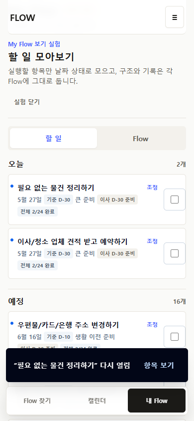
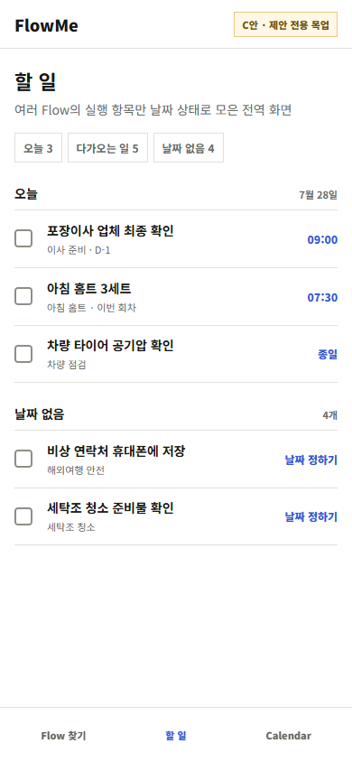
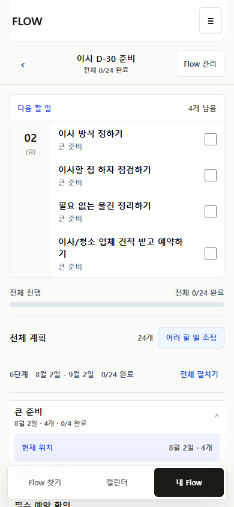
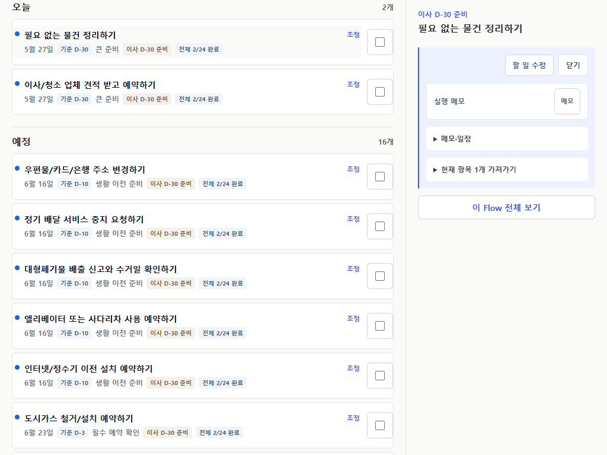
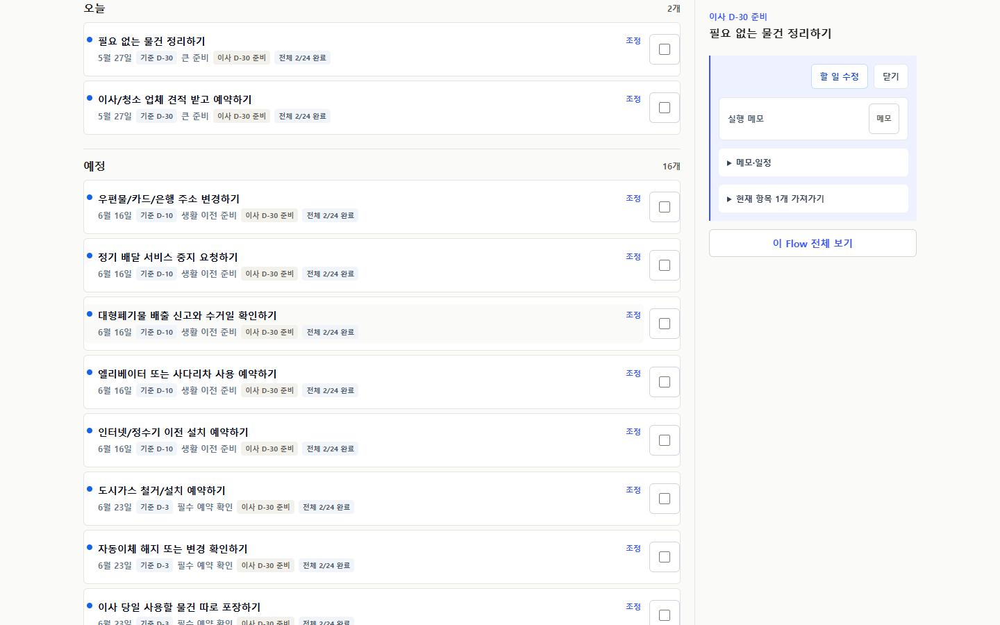
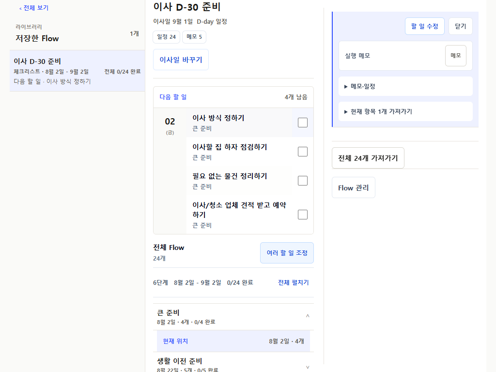
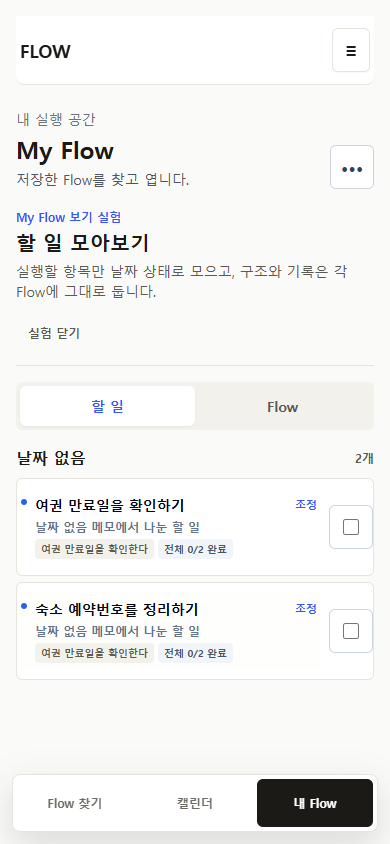
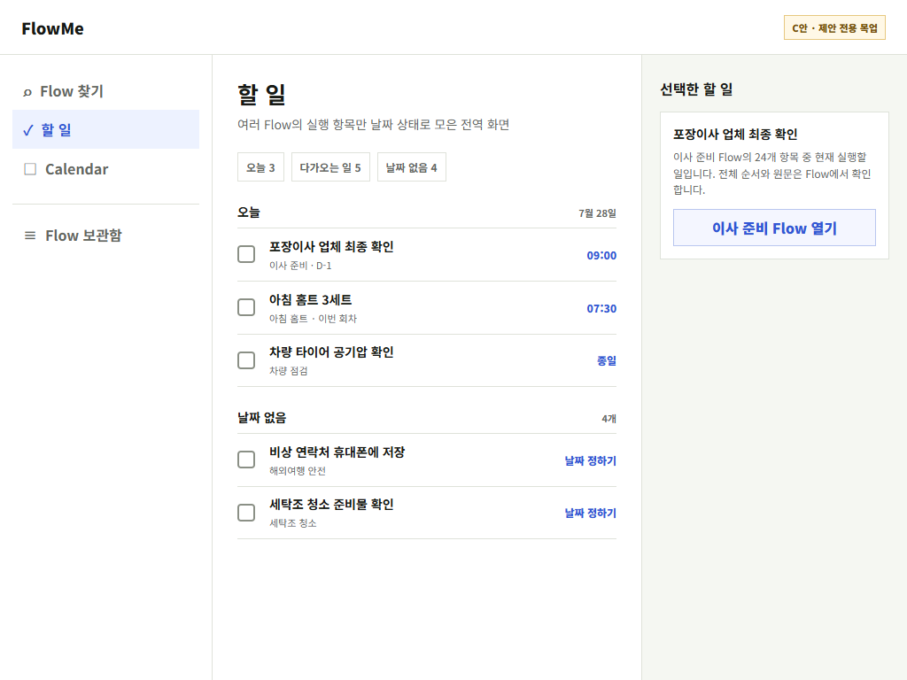

A · CURRENT
현재 My Flow 유지
Flow별 전체 맥락은 가장 강하지만 여러 Flow의 실행 항목을 비교하려면 각 Flow를 열어야 합니다.

- 전역 IA 변경 없음
- 교차 Flow 실행 약함
- 위험 최소
P35-H1 · OWNER REVIEW GATE
R8A~R12에서 반복 회차, artifact 의미, 완료 중복, shape별 행 문법, wide workspace를 정리했습니다. 전역 IA는 아직 바꾸지 않았고, My Flow 안의 opt-in Todo 실험까지 검증한 상태입니다.
기술적으로는 R13 final gate를 시작할 수 있지만, 전역 실행 진입의 제품 결정을 자동화가 대신할 수 없습니다. B안은 실제 앱의 opt-in 실험으로 검증됐고, A안은 현재 구조, C안은 정적 제안입니다.
첫 회차 뒤 실제 다음 회차를 찾고 series와 occurrence count를 분리합니다.
해외여행 안전 Flow는 public부터 saved workspace까지 Checklist primary입니다.
현재 실행이 checkbox를 소유하고 전체 계획은 현재 위치와 전체 범위를 소유합니다.
완료 행이 실제로 사라질 때만 되돌리기를 보이며, 보이는 행은 checkbox로 다시 엽니다.
Memo 기록, Routine series, Sheet 순서를 일반 Todo 진행률로 왜곡하지 않습니다.
library, execution canvas, inspector가 각각 선택, 실행, 맥락 명령을 맡습니다.
같은 행 문법을 쓰되 완료 가능성과 현재 실행 단위는 콘텐츠 의미에 맞게 다릅니다.
| Shape | 현재 실행 단위 | 전체 구조 | Todo 실험 | 완료 |
|---|---|---|---|---|
| Calendar | 가장 가까운 날짜 묶음 | 전체 날짜 범위 | 날짜 상태별 Item | Item |
| Checklist | 다음 할 일 최대 3개 | 전체 체크 목록 | 날짜 있음/없음 Item | Item |
| Routine | 현재 occurrence | series 정의와 기록 | 현재 occurrence만 | Occurrence |
| Sheet | 현재/다음 행 | 전체 순서표 | 현재 행만 | 현재 행 |
| Memo | 기록 | 자료와 개인 메모 | 제외 | 해당 없음 |
A와 B는 current app evidence, C는 app에 적용하지 않은 정적 proposal입니다.
Flow별 전체 맥락은 가장 강하지만 여러 Flow의 실행 항목을 비교하려면 각 Flow를 열어야 합니다.
Todo와 Flow library를 함께 유지합니다. 날짜 상태와 완료는 Calendar와 같은 stable Item을 읽습니다.

실행 목적은 가장 명확하지만 Flow library 재배치와 전역 navigation 검증이 새로 필요합니다.







자동 검증과 screenshot은 실제 사용자 관찰이 아니며 observed users는 0명입니다.
| 등급 | 항목 | 처리 |
|---|---|---|
| High | A/B/C 제품 선택 미확정 | 이번 H1에서 사용자 결정 |
| High | 모바일 전체 계획 기본값 미확정 | 접힘/펼침/첫 진입만 펼침 선택 |
| Medium | B안 실제 장기 사용성 미관찰 | R13 뒤 관찰 준비, 현재 observed users 0 |
| Medium | C안 interaction/deep link 미검증 | 선택할 때만 별도 prototype gate |
| Low | 큰 dirty worktree publish scope | publish 전 scoped ownership audit |
Screenshot, Playwright, heuristic simulation은 실제 사용자 검증이 아닙니다.
추천: B · My Flow 안에 교차 Flow 할 일 보기를 두고 Flow library를 유지합니다.
기본 접힘 / 기본 펼침 / 첫 진입만 펼침 중 선택합니다.
현재 결과로 R13을 시작하거나, H1 화면에 한정한 revision을 먼저 진행합니다.